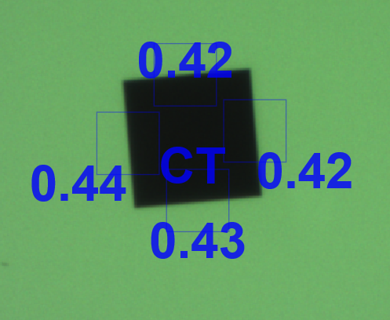
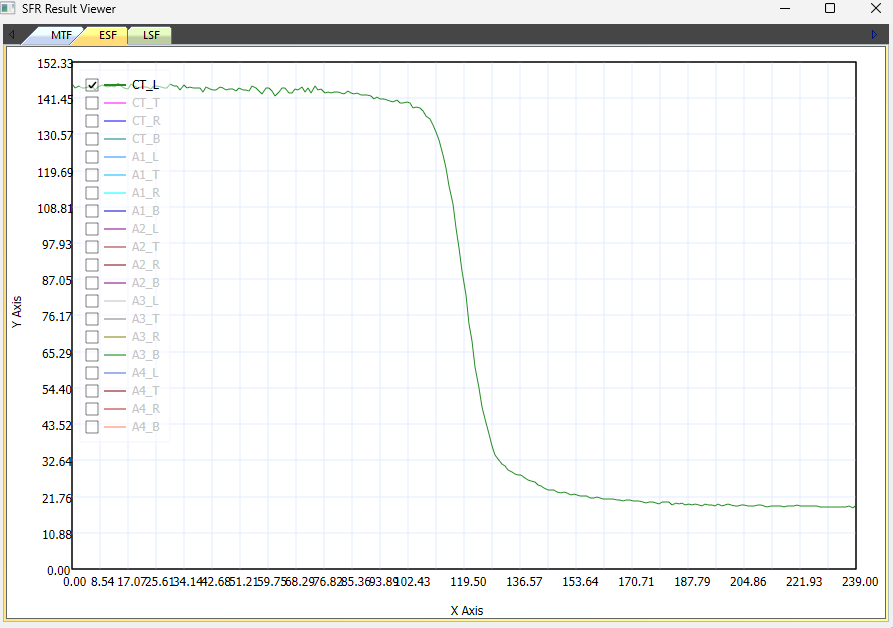
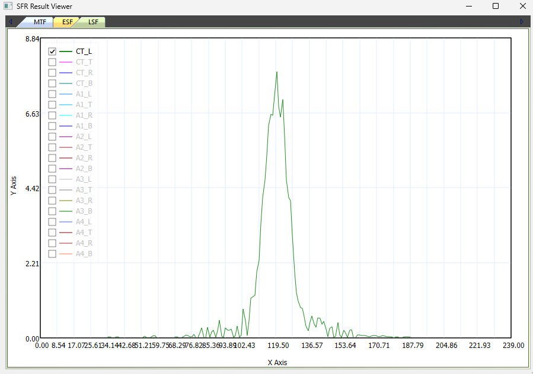
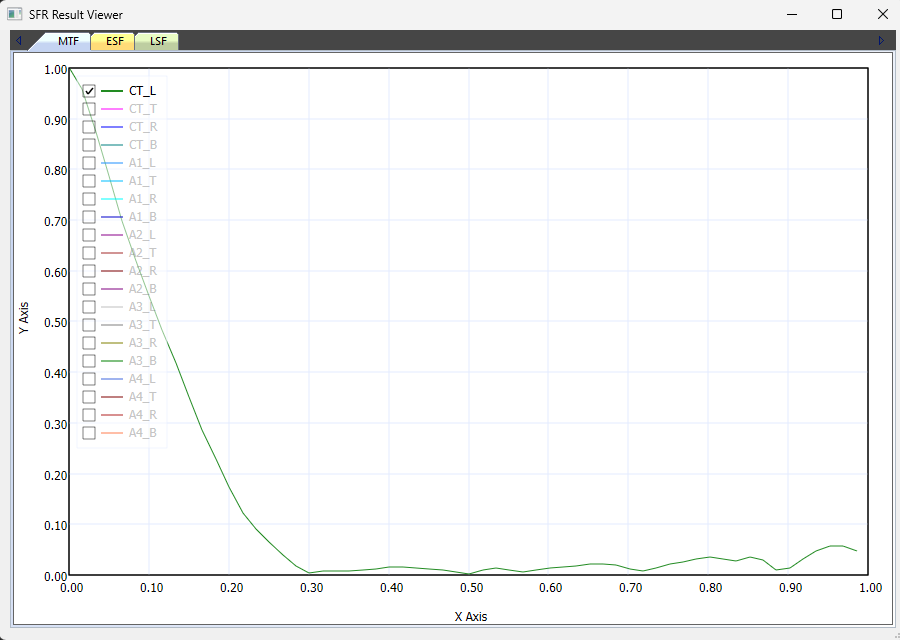

On this page
SFR Method (English)
SFR (Spatial Frequency Response) evaluates resolving power by measuring how well a camera preserves contrast across spatial frequencies. CameraMaster detects the edge of a chart and then converts it through ESF → LSF → MTF to derive the SFR value.
Based on the Slanted-Edge method of the ISO-12233 standard.
Measurement Flow
| Step | Description | Output |
|---|---|---|
| 1 | SFR block / edge detection and image acquisition | Edge region image |
| 2 | ESF (Edge Spread Function) data acquisition | Brightness distribution curve |
| 3 | LSF (Line Spread Function) data acquisition | Brightness derivative curve |
| 4 | MTF value check | FFT of LSF, sharpness per frequency |
| 5 | cycles/pixel → cycles/mm conversion | LP/mm, MTF50 interpretation |
1. SFR Block / Edge Detection

- Find the SFR block and detect each edge
- Locate the SFR block → find the top, bottom, left, and right edges of that block
- For Bayer images, perform demosaic
- Extract the Y (luminance) value from the image to acquire the image used for SFR calculation
2. ESF (Edge Spread Function) Data Acquisition

- Brightness graph centered on the edge (X axis : pixel position, Y axis : pixel brightness)
- Find the edge position of each line
- Re-align coordinates relative to the edge
- Average the brightness values at equal distances on both sides of the edge center
- Generate the ESF
3. LSF (Line Spread Function) Data Acquisition

- Graph of the slope of the ESF (rate of change = derivative) (X axis : pixel position, Y axis : edge slope)
- The value is high at the boundary line
- A sharp peak means the focus is high
- A broad, low peak means the focus is low
4. MTF Value Check

- After applying FFT (Fourier transform) to the LSF, check the image sharpness per frequency (X axis : spatial frequency cycles/pixel, Y axis : MTF value = SFR)
- At the frequency 0.125 (cycle/pixel), the MTF value is found to be 0.44
5. cycles/pixel → cycles/mm Conversion
Convert to the number of line pairs per mm.
cycles/mm = (cycles/pixel) / Pixel pitch (mm/pixel)
- MTF50 is the number of line pairs at an MTF value of 0.5
Example — when the pixel pitch is 1.4 um
1.4 um → 0.0014 mm
0.11 / 0.0014 = 71.42 LP/mm (cycles/mm)
Meaning of the Y axis (MTF value)
- Indicates what percentage of the black-and-white contrast is preserved
- If the actual chart is black =0 and white =255, at MTF50 black appears ≈64 / white ≈191
- That is, up to 71.42 LP/mm half of the original contrast is preserved, and 71 lines are clearly distinguished
MTF Evaluation Criteria
| Criterion | Meaning |
|---|---|
| MTF50 | Looks sharp |
| MTF30 | Somewhat visible |
| MTF10 | Resolution limit |
Need help? Troubleshooting · Contact technical support